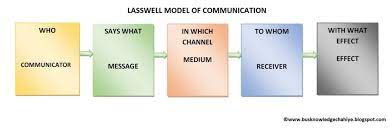

Elements of Communication
Viewing the information in our webpage, I, Kirstine Zianne Alfaro, have observed at least six elements of communication.
For starters, I have observed one of the elements, which is the sender. The sender, also known as the communicator, is the individual who starts the conversation and has developed the thought that he wants to share with others. In this case, the sender for this communication would be us, the ones who created the webpage.
I also observed the encoding element in this assessment. The sender begins the encoding process by translating the information into a message using specified words or non-verbal methods such as symbols, signs, body motions, and so on. The sender's knowledge, abilities, perception, background, competencies, and so on all have a significant impact on the message's success. In this case, us senders have encoded (quite literally) the message that we want to convey through making this particular webpage.
When the encoding is complete, the sender receives the message he intended to transmit. The message can be written, spoken, symbolic, or nonverbal, such as body gestures, silence, sighs, sounds, or any other indication that causes a receiver to respond. In this case, I have observed that the message, one of the elements of communication, is also present in our webpage. We have told everyone and gathered information about Climate Change.
The Sender selects the method by which he or she wants to communicate his or her message to the recipient. It must be properly chosen in order for the message to be effective and appropriately understood by the recipient. The choice of medium is determined by the sender's and receiver's interpersonal ties, as well as the urgency of the message being communicated. Some of the most often utilized communication media are oral, virtual, written, sound, gesture, and others. Our message is put into a webpage for everyone to see so that they can be informed.
I have observed that our message is intended for a receiver. The receiver is the one who is intended or targeted by the message. He attempts to comprehend everything as thoroughly as possible so that the communication goal is met. The receiver's ability to decode the message is determined by his subject matter knowledge, experience, trust, and relationship with the sender. In this case, the receiver would be anyone who stumbles upon the website.
If there’s a receiver, there should also be a decoding element observed. The receiver decodes the sender's message and tries to comprehend it as well as possible. Only when the receiver interprets the message in the same way that it was intended by the sender is communication effective.
Model of Communication Used

I believe that the model of communication used in creating this webpage is the Lasswell Model of Communication.
The reason for this is because The Lasswell communication model (also known as Lasswell's communication model) outlines who is saying what, which channel is used to send messages, who the message is intended at, and what effect the message has. The model is established primarily for mass communication, the effect component was made to be more about the message's consequence. Communicators for our webpage are the ones who contributed to the page, the message is what we are trying to say to our receiver and the medium is what we chose to send our message to, in this case, it’s the webpage. And of course, we send that message to a receiver who then shows the effect for which our message has affected the receiver. To put a cherry on top, the model is used in a variety of media and fields. So according to all of that, this is the most appropriate model to use.